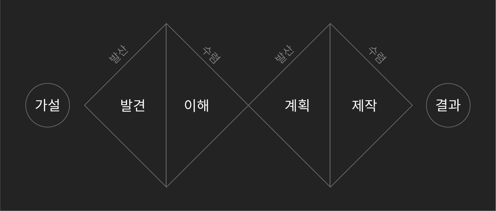
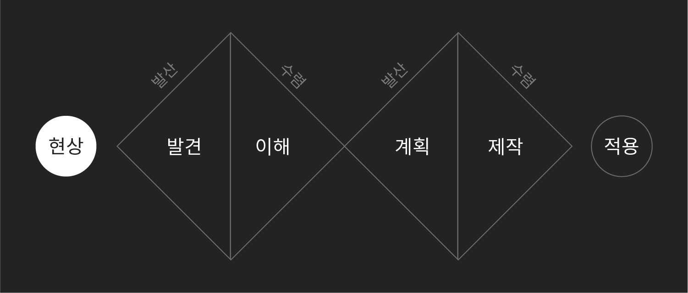
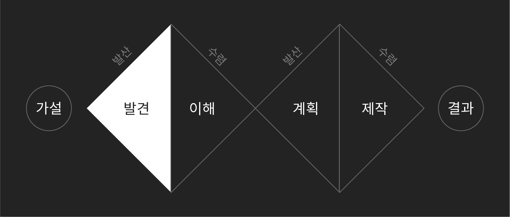
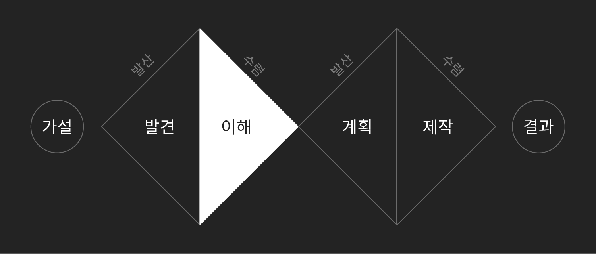
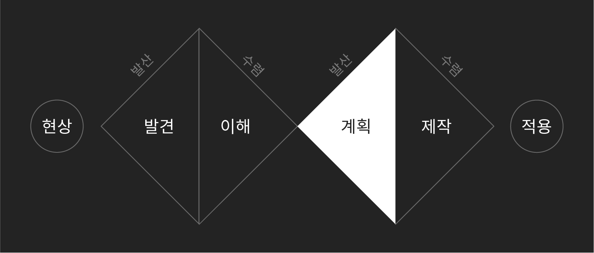
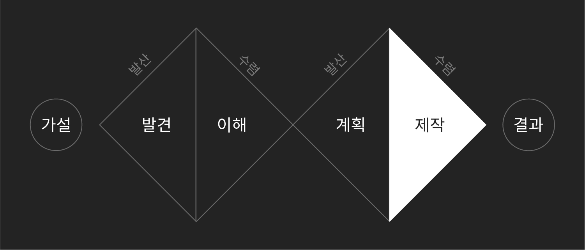

디자인 사고
디자인 사고는 창조할 때 생각하는 과정입니다. 관찰을 통해 문제를 정의하고 실험을 통해 성공과 실패를 반복하며 발전해나가는 방법론입니다. 이 과정에서 정리한 내용이 여러 가능성 중에서 가장 적합한 방법을 선택하는 기준이 됩니다.
주관, 느낌, 번뜩이는 아이디어, 천재와 같은 개념으로 오해받는 창의성을 명확하게 다루기 위한 접근 방식으로 '자신이 만들고 싶은 것'이 무엇이며 필요한 정보들이 무엇인지 명확하게 파악할 수 있습니다. 과정을 눈에 보이도록 기록해 각 단계마다 필요한 것들을 나 혹은 구성원에게 명확하게 요구할 수 있습니다.

현상
무슨 일이 일어나고 있는지 알아내는 단계입니다. 어떤 맥락에 속해 있느냐에 따라 주제가 다르며 모든 것을 관찰할 수는 없기 때문에 나 혹은 단체가 속해 있는 맥락이 무엇인지 파악한 뒤 관찰할 대상을 정합니다.

- 구글 알리미
- 디자인 블로그
- 미디엄, 브런치
- 당신이 접하는 모든 미디어
수집
관찰할 현상을 선택했다면 연관된 모든 것들을 기록합니다. 발산형 사고가 필요한 단계로 한계를 두지 않고 최대한 '양'에 집중해서 목록을 만듭니다. 되도록 부사, 추상적 의견이 섞이지 않도록 주의하면서 정성적, 정량적 정보를 최대한 확보합니다.

- 브레인스토밍
분석적인 판단을 하기 전에 팀이 모여 주제와 연관된 발상을 가능한 한 많이 끌어내는 방법입니다.
- 필드 리서치
사용자와 직접 대면해 어떤 환경에서 어떤 행동을 하는지 관찰하는 방법입니다.
- 사용자 인터뷰
다수 혹은 소수의 사람에게 제한된 상황을 설정 속에서 질문하고 구체적인 목표를 어떻게 수행하는지 관찰하는 방법입니다.
- 터치 포인트
사용자와의 모든 접점을 말합니다. 위치, 장소, 웹, 메일링(이메일과 우편), VOC 채널 상품 등이 있으며 서비스 디자인뿐만 아니라 브랜딩과도 밀접한 관계가 있습니다.
이해
수집 단계에서 찾은 수많은 정보를 정리하는 단계입니다. 수렴적 사고가 필요한 단계로 현상을 설명할 수 있는 '질'이 높은 정보를 찾아내야 합니다. 현상이 일어난 원인과 결과를 파악한 뒤 다양한 가설을 세워 실행 단계로 넘어갑니다.

- 페르소나
가상으로 사용자를 설정하는 방법입니다. 사용자가 누구냐에 따라 많은 기준이 달라지기 때문에 가장 먼저 정의하는 것이 좋습니다.
- 사용자 여정 맵
서비스와 처음 만난 지점부터 끝나는 지점까지의 과정을 그림이나 사진, 도표 등으로 시각화하는 방법입니다.
계획
이해 단계에서 찾아낸 정보를 토대로 문제를 해결할 방법을 찾는 단계입니다. 다양한 가설에 기반해 실현 가능한 방법을 찾습니다. 현실적으로 실행할 수 있는 방법을 찾아내고 구체적으로 어떻게 실행할지를 결정합니다.

- 리소스 체크
- 버전 관리
- 스펙
- 일정
- 제품 로드맵
제작
계획 단계에서 정한 범위 안에서 구현하는 단계로 실제로 사용자가 바로 사용할 수 있는 형태를 만들어냅니다. 웹, 모바일 제작 테크닉부터 인지심리학, HCI(Human-Computer Interface)와 같은 이론들이 적용됩니다.

결과
어떤 결과가 나왔는지 확인하는 단계입니다. 이해 단계에서 세웠던 가설에 따라 선택한 방법이 의도한대로 작동했는지 확인합니다. 만약 의도한 결과가 나오지 않았다면, 문제가 있다고 의심되는 단계부터 다시 시작합니다.